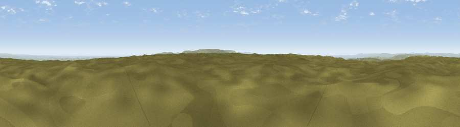

Viewpoint near Lane
#12798 in England · top 18% of its area beats it · near Lane · open accessWhere it is
The exact computed spot (SE 07775 04825). Click the marker for map links.
Public access: this spot lies on mapped open-access land (CRoW Act 2000) — you may roam here on foot. Computed from Natural England's CRoW access layer and OpenStreetMap rights of way — not the legal definitive map. Always verify locally.
The view, rendered

A 360° render of this exact spot computed from the terrain model, tree cover and land cover — summer colours, afternoon light, calibrated against photographs of famous viewpoints. Real trees, hedges and buildings will differ in detail.
The panorama
Grey silhouette: terrain skyline in each direction (720 bearings, Earth curvature and refraction included). Dashed green: skyline with trees (+15 m) and buildings (+8 m) as obstacles. Blue strip: how far the ground is visible on each bearing.
Where the view opens
Wedge length = distance to the farthest visible ground on that bearing (vegetation-aware). Rings at 10, 25 and 50 km.
What fills the view
82% grassland · 8% woodland · 6% built-up · 4% cropland
Angular shares of the visible panorama (visual magnitude), not map area. Landscape diversity 0.29 (0–1 Shannon).
Key numbers
More beautiful places nearby
The staircase of upgrades: each row has a higher view potential than everything closer. Driving times are estimates from straight-line distance, calibrated against real road routing — check an actual route before setting out.
| Place | Direction | Drive | Score |
|---|---|---|---|
| Viewpoint near Lane | NNW · 0 km | ~1 min | 62.9 |
| Viewpoint near Lane | ENE · 2 km | ~5 min | 68.5 |
| West Nab | N · 4 km | ~9 min | 69.4 |
| Viewpoint near Marsden | N · 6 km | ~13 min | 71.0 |
| Viewpoint near Greenfield | WSW · 8 km | ~16 min | 76.0 |
| Viewpoint near Carrbrook | WSW · 10 km | ~19 min | 77.1 |
| Viewpoint near Edenfield | WNW · 29 km | ~46 min | 77.5 |
| White Brow | W · 42 km | ~62 min | 82.9 |
53.54001, -1.88415 · source: screening · position refined by local search. Computed location — check access rights before visiting.